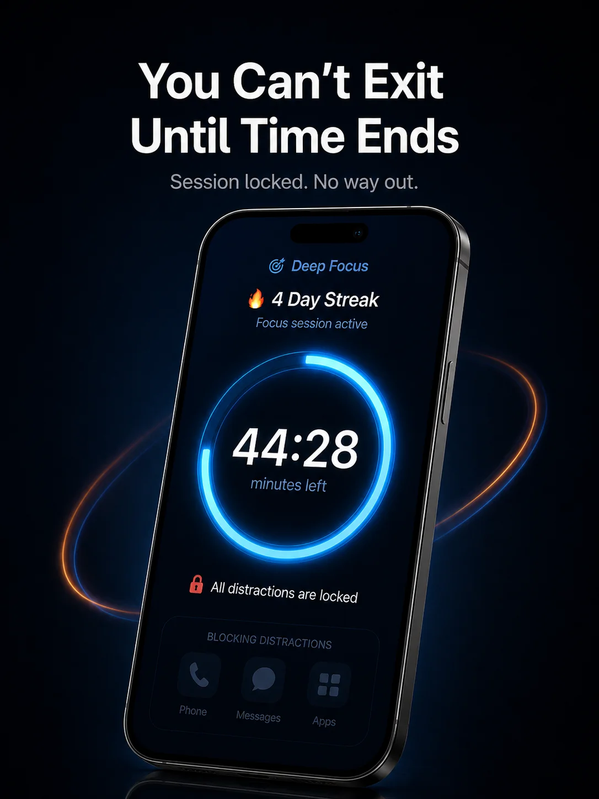
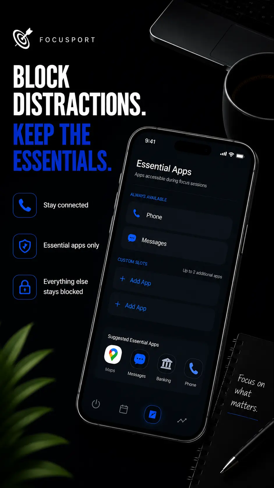

// Real Screenshots
SEE THE APP.
Here's exactly what FocusPort looks like — from setup to locked session to tracking.

Home — Set Your Session

Auto-Schedule & Active Timer

📱 Screen 3Locked — No Way Out

Emergency App Whitelist

📱 Screen 5Track Sessions & Streaks